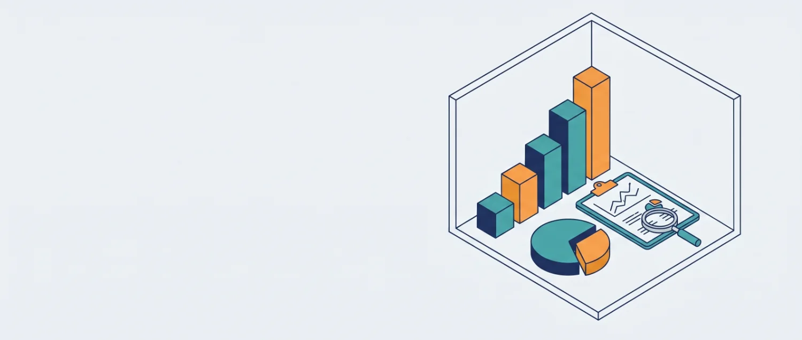

Rehberlik ve Psikolojik Danışma Hizmetleri Faaliyet Raporu
Raporlar
Seçtiğiniz dönem ve filtrelere göre görüşme, etkinlik ve toplantı istatistikleri.

Yükleniyor…
Kapsama — Görüşülen Öğrenci Oranı (Sınıf Bazında)
Yükleniyor…
Seçili dönemde kendisiyle veya velisiyle en az bir görüşme yapılan öğrencilerin, sınıftaki tüm kayıtlı öğrencilere oranı.
Takip Uyarı Listesi
Yükleniyor…
Etiketi olan ama son 30 gündür görüşülmeyen öğrenciler (bugüne göre). Öğrenci adları içerdiği için bu liste yazdırılan rapora eklenmez.
Aylık Görüşme Trendi
Yükleniyor…
Görüşme Konusu Dağılımı
Yükleniyor…
Başvuru Şekli (Öğrenci Görüşmeleri)
Yükleniyor…
Yapılan Çalışma Türü (Öğrenci Görüşmeleri)
Yükleniyor…
Sınıf Bazında Görüşme Sayısı
Yükleniyor…
Etikete Göre Görüşülen Öğrenci Sayısı
Yükleniyor…
Bir öğrenci birden fazla etikete sahip olabileceğinden toplam, görüşülen öğrenci sayısını aşabilir.
Yönlendirme Dağılımı (RAM / Hastane / Diğer Kurumlar)
Yükleniyor…
Sınıflara Göre Etiket Dağılımı
Yükleniyor…
Yapılan Sınıf Etkinlikleri
Yükleniyor…
Yapılan Toplantılar
Yükleniyor…